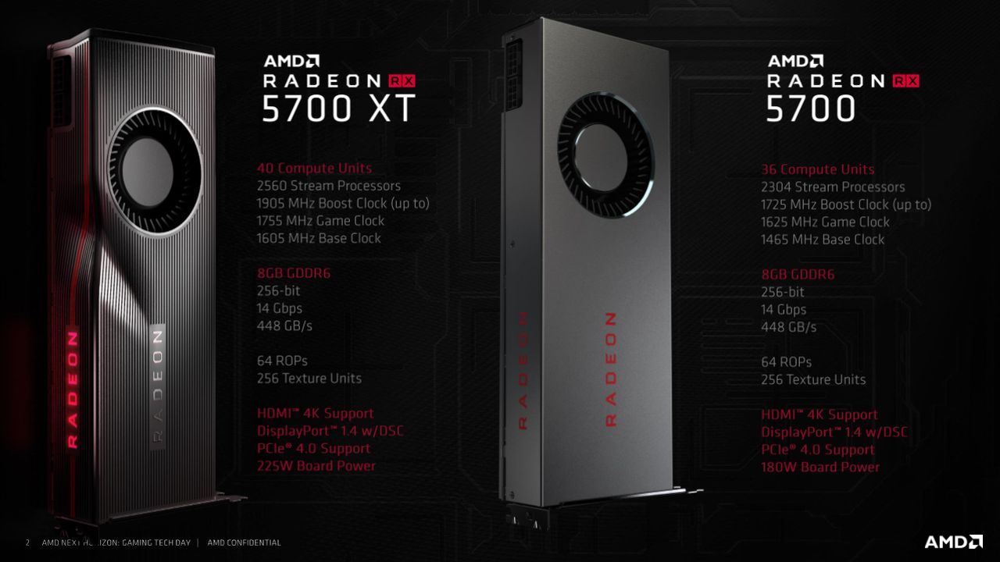

Pada ajang Computex 2019, AMD telah memberikan sedikit bocoran mengenai dua GPU teranyar mereka yang memiliki kode Navi. Kini, sesuai janji, di ajang E3 2019 mereka memamerkan spesifikasi lengkap dari kedua GPU teranyar mereka. Adalah Radeon RX 5700 dan RX 5700 XT. Dua GPU ini akan memiliki inti pemrosesan 7nm, sama seperti yang ada di CPU Ryzen seri 3000 mereka yang didasarkan pada arsitektur Zen 2.

Mereka meninggalkan arsitektur GPU lama mereka, yakni GCN untuk kedua GPU baru ini. AMD telah menggunakan arsitektur baru yang bernama RDNA untuk menghasilkan sebuah prosesor yang memiliki kemampuan yang lebih tinggi. Selain menggunakan arsitektur baru, mereka juga akan memiliki beberapa teknologi baru di GPU tersebut. Salah satunya adalah penggunaan PCIe 4.0, yang memiliki bandwidth dan kecepatan dua kali lipat dari generasi sebelumnya. Satu hal yang cukup mengejutkan adalah AMD kembali menggunakan desain pendinginan lawas yang biasa ada di GPU AMD sebelumnya. Namun, AMD mengatakan mereka telah menyempurnakan ‘vapor chamber’ di GPU ini dan memiliki kipas blower yang lebih baik. Basis vapor chamber ini akan menggunakan bahan antarmuka termal grafit yang mirip dengan bantalan yang digunakan pada kartu grafis Radeon VII. PCB kartu ini menawarkan VRM digital 7 fase yang menurut AMD dirancang untuk overclocking. Soal spesifikasi, AMD juga mengatakan baik Radeon RX 5700 dan RX 5700 XT masing-masing akan mengalahkan kemampuan RTX 2060 dan RTX 2070 milik NVIDIA. Tentu saja, hal ini merupakan sebuah pernyataan yang cukup berani. Soal spesifikasi, Radeon RX 5700 akan didasarkan dari Navi Pro GPU. GPU ini memiliki 36 compute unit dengan 2304 stream prosesor, 256 TMUs, 64 ROPs. Kecepatan clock dipertahankan pada 1465 MHz di mode standar, 1725 MHz di mode boost clock, dan 1625 MHz di mode game. Pada kecepatan boost puncak, GPU ini akan dapat memberikan kinerja 7,95 TFLOPs Compute. Kartu ini memiliki konfigurasi konektor 8+6 pin dan memiliki nilai TBP 180W. Mereka juga menyematkan RAM sebesar 8GB GDDR6 di GPU ini. AMD Radeon RX 5700 secara resmi akan berharga USD379 atau Rp5,4 juta. Harga ini lebih murah jika dibandingkan dengan RTX 2060 milik Nvidia. Sedangkan untuk Radeon RX 5700 XT akan hadir dengan total 40 unit komputasi yang akan menghasilkan 2560 stream processor. Prosesor ini juga akan hadir dengan 256 TMUs dan 64 ROPs. Kecepatan clock dari GPU ini akan menyentuh 1605 MHz di mode standar, 1905 MHz di mode boost, serta 1755 MHz di mode gaming. Di mode boost tertinggi, GPU ini akan memiliki kemampuan maksimum 9,75 TFLOP Compute dengan presisi tunggal dari Radeon RX 5700 XT. GPU ini juga akan akan dilengkapi dengan memori GDDR6 8 GB yang berjalan melintasi antarmuka bus 256-bit. AMD akan menggunakan die memory 14 Gbps terbaru yang membuatnya setara dengan kartu Turing TU104 yang menawarkan bandwidth hingga 448 GB/s. Kartu ini juga dilengkapi dua konektor 8 pin dan memiliki tarikan daya total TBP hingga 225W. AMD Radeon RX 5700 XT secara resmi akan berharga USD449, yang lebih murah jika dibandingkan dengan RTX 2070.